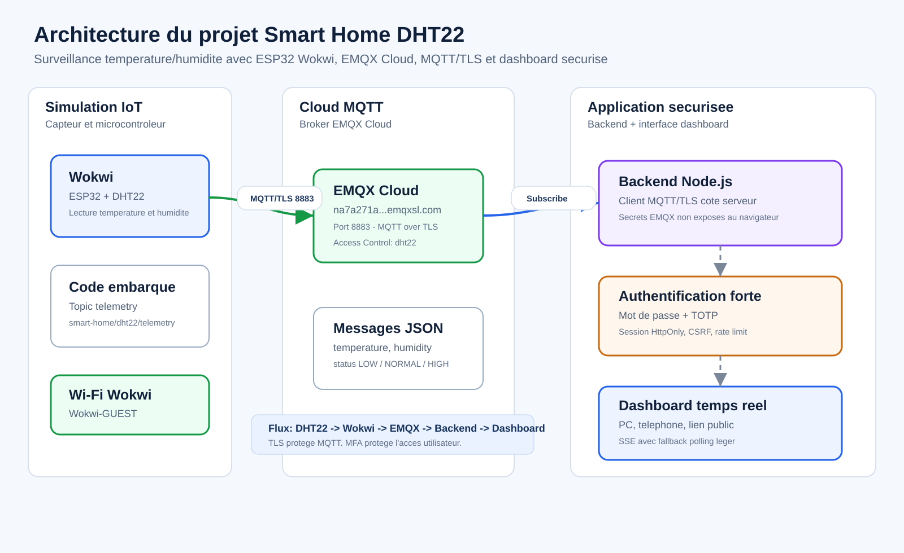
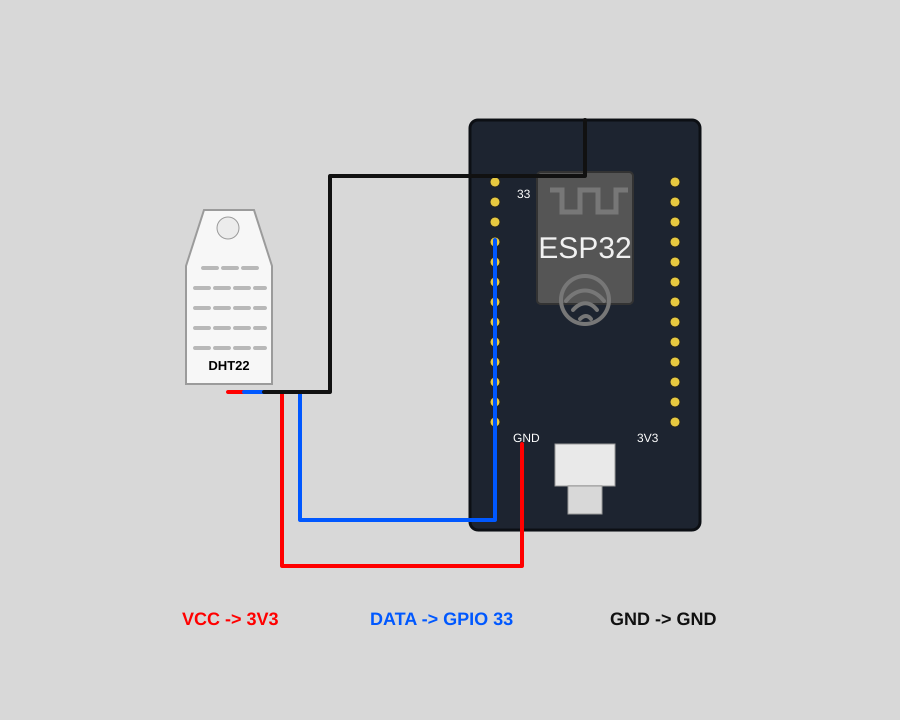

Application securisee de visualisation temps reel des donnees DHT22 envoyees par ESP32/Wokwi vers EMQX Cloud avec MQTT chiffre par TLS.
Montrer au jury une chaine complete: acquisition capteur, publication MQTT/TLS, reception cloud, backend applicatif securise et dashboard accessible depuis PC ou telephone.
Le projet est organise autour de trois blocs: simulation IoT, broker MQTT cloud et application securisee. Chaque bloc a un role clair dans la chaine de donnees.


DHT22 mesure la temperature et l'humidite. ESP32 publie un payload JSON sur EMQX Cloud via MQTT/TLS.
Le backend Node.js s'abonne au topic, stocke l'historique local et pousse les mises a jour au navigateur.
| Composant | Role | Preuve / configuration |
|---|---|---|
| Wokwi + ESP32 | Simulation du microcontroleur et lecture du capteur DHT22. | Dossier wokwi/: sketch, diagramme et bibliotheques. |
| DHT22 | Mesure temperature et humidite. | GPIO 33, seuils: 18-30 C et 30-70%. |
| EMQX Cloud | Broker MQTT accessible depuis Wokwi et le backend. | na7a271a.ala.eu-central-1.emqxsl.com:8883 |
| MQTT/TLS | Transport chiffre et authentifie pour les messages IoT. | Port 8883, protocole MQTT_TLS. |
| Backend Node.js | Connexion au broker, abonnement au topic, API et sessions. | Topic smart-home/dht22/telemetry. |
| Dashboard Web | Visualisation temps reel, historique, alertes et etat MQTT. | Accessible localement, en LAN ou via tunnel public. |
{
"device": "ESP32_DHT22",
"temperature": 24.00,
"humidity": 40.00,
"temperature_status": "NORMAL",
"humidity_status": "NORMAL",
"protocol": "MQTT_TLS",
"port": 8883
}
ESP32/Wokwi envoie les donnees au cloud avec MQTT sur TLS. L'objectif est de garantir la confidentialite du flux capteur.
Le dashboard impose un mot de passe et un second facteur TOTP avant l'acces aux donnees.
Les identifiants EMQX sont utilises par le backend et ne sont pas exposes dans le navigateur.
Sessions signees HttpOnly, protection CSRF, limitation des tentatives et supervision de l'etat applicatif.
| Test | Resultat attendu |
|---|---|
/api/health |
mqtt.connected = true, verification de la connexion au broker MQTT. |
| Wokwi Serial Monitor | Connecting to EMQX Cloud using MQTT/TLS... connected puis Telemetry published successfully. |
| Dashboard | Temperature, humidite, statuts et historique se mettent a jour a la reception MQTT. |
deployment-na7a271a.8883.Local: http://localhost:3000
LAN: http://192.168.1.11:3000
Wokwi: https://wokwi.com/projects/REMPLACER_PAR_LE_LIEN_PUBLIC
Public temporaire: trycloudflare.com
Le lien Cloudflare est temporaire. Garder la fenetre PowerShell ouverte pendant la demo.
Le dashboard change seulement quand Wokwi publie de nouvelles valeurs.
Le projet respecte l'enonce: une maison intelligente supervise temperature et humidite a distance, les donnees passent par un serveur cloud via MQTT/TLS, et l'acces utilisateur se fait par une application securisee avec authentification forte.